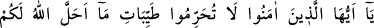
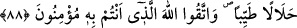
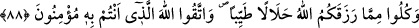

NİMETLERDEN İSTİFADE
VE HADDİ AŞMAMAK
87. Ey îman edenler! Allah’ın size helâl kıldığı güzel ve temiz şeyleri (siz
kendinize) haram kılmayın ve sınırı aşmayın. Allah sınırı aşanları sevmez.
88. Allah’ın size rızık olarak verdiği şeylerin helâl ve temiz olanlarından yiyin ve
kendisine îman ettiğiniz Allah’tan korkun.
“Ey îman edenler! Allah’ın size helâl kıldığı güzel ve temiz şeyleri” haram
sayarcasına kendi kendinize yasaklayarak “haram kılmayın ve” size helâl kılınanları
bırakıp haram kılınanlara teşebbüs ederek “sınırı aşmayın.” Allah’ın helâl kıldığını
haram kılan, haram kıldığını da helâl kılar.
“Sınırı aşmayın” emrinin bir anlamı da, temiz şeylerde israfa kaçmayın. Çünkü israf
da haram kılınan şeyleri yemek gibi haramdır.
“Allah sınırı aşanları sevmez.” Kullarının, koyduğu sınırları aşarak kendi nefislerine
zulmetmelerine râzı olmaz.
88. Allah’ın size rızık olarak verdiği şeylerin helâl ve temiz olanlarından yiyin ve
kendisine îman ettiğiniz Allah’tan korkun.
“Allah’ın size rızık olarak verdiği şeylerin helâl ve temiz olanlarından yiyin.”
Abdullah b. Mübârek şöyle der: Helal, helal kılındığı için yenilen şeylerdir. Tıyb ise
gıdâ olarak alınan ve nemâlandırılan şeylerdir.
Tedavi için olmadıkça; çamur, toprak ve gıda maddesi olmayan şeyleri yemek
mekruhtur.
“Ve kendisine îman ettiğiniz Allah’tan korkun.” Bu emir aynı zamanda kendinden
önceki “helal yeyiniz” emrini te’kid eder. Çünkü bu emir mübah ve helal kılınmayı
ifade ettiği gibi helâl yemenin mübah kılınması, bunun zıddı olan haram yemenin haram
kılındığı mânâsına gelir. İşte “Allah’tan korkun!” emri “helal yiyin” emrini bu yönüyle
te’kid etmekte “kendisine îman ettiğiniz Allah” sözüyle de bu te’kid pekiştirilmektedir.